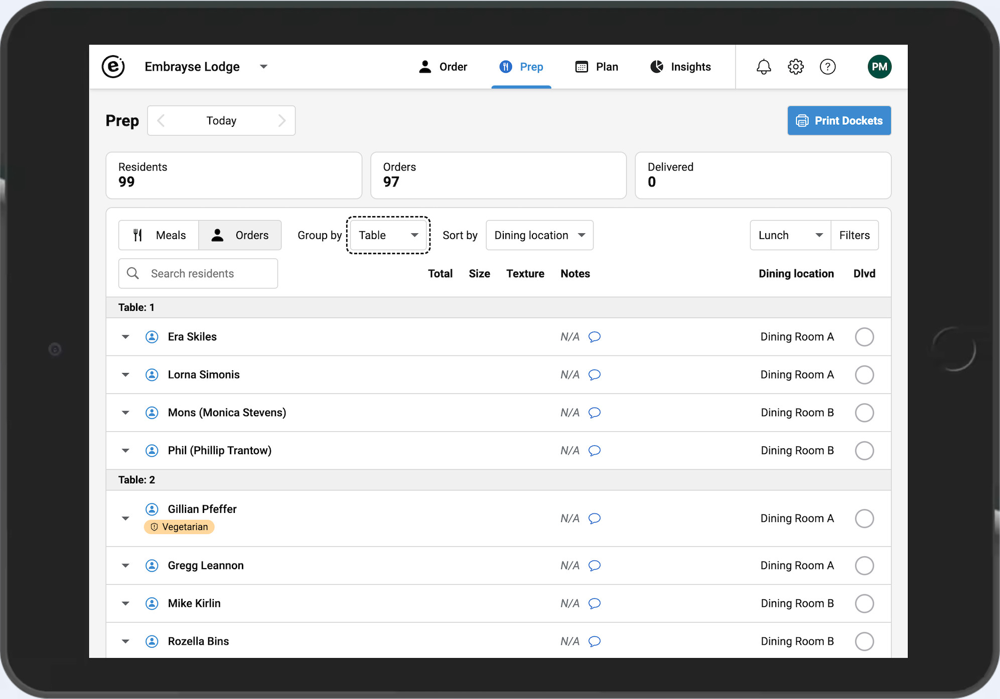
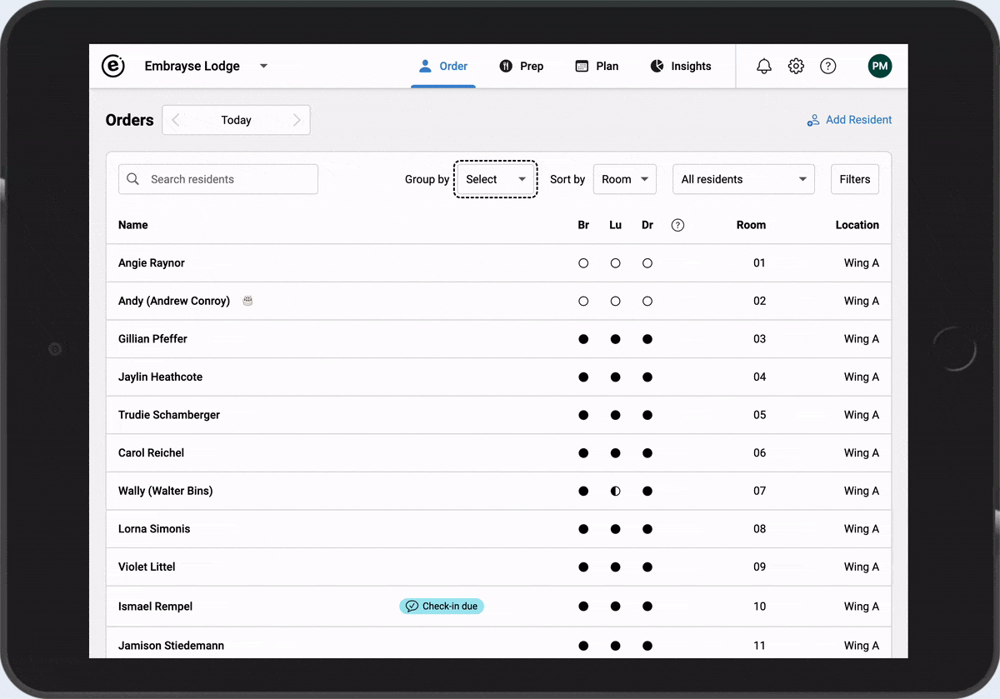
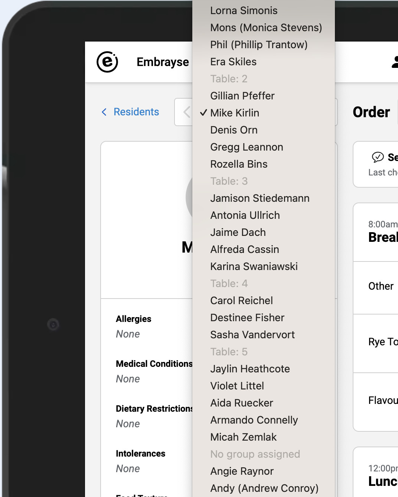
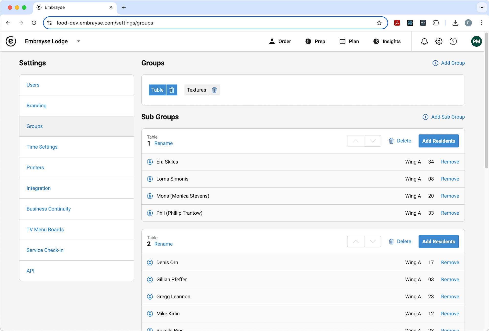
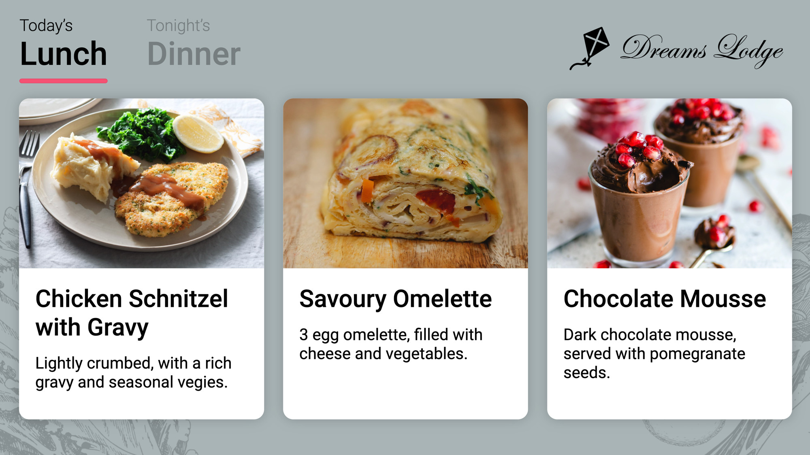
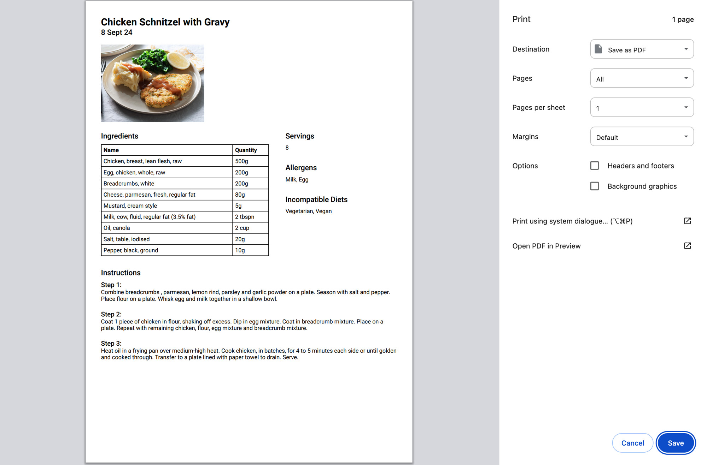

Release 2024.4 – Groups, TV Menu Updates, and Recipe Improvements
The latest release of Embrayse introduces powerful new productivity features, along with other enhancements, to increase your efficiency and improve resident experience. As always, please reach out to us if you need assistance in taking advantage of these changes.
Groups
You can now group residents on the Order and Prep pages. A common use of this feature is to group residents by their dining room seating arrangement, but you may find other use cases specific to your home, such as grouping by texture or assistive needs. Header rows appear for each group, and the resident dropdown now follows the previous list sorting with group headers.




TV Menu Updates
The TV menus have had a face lift. Menu items and their photos are now larger, and text contrast has been enhanced for better readability. We've introduced more customisation options as well: display between 1 and 3 meal services, optionally show tomorrow's services, and upload your own logo.

Recipe Improvements
The recipe ingredient search functionality has been significantly improved, delivering more accurate results with better sorting when you search. Accessing recipes is now easier from the Plan screen via the context menu of menu items. Icons now identify which menu items have a recipe available, and recipes can be printed in a clean, print-friendly format.

Other Improvements and Bug Fixes
- Optimised and streamlined the Prep page, including removal of the per-resident Print Docket button.
- On the Prep page, when an item is checked as "delivered" under the Orders view, it is also displayed as green under the Meals view to make it more clear which items have been served.
- Increased the size of the "delivered" checkbox on the Prep page for ease-of-use.
- Docket print settings can now be modified to not print resident Notes on dockets, in case they are too long or contain sensitive information.
- Improved responsiveness of the user interface on tablets.
- Made transition between residents' ordering pages more clear, when connectivity is slow.
- Minor UI improvements such as border colours.
- Fixed: double scroll bar showing on user settings page.
- Fixed: line breaks in recipe instructions don't display correct in the recipe viewer.
- Security improvements.
Want to see Embrayse in action?